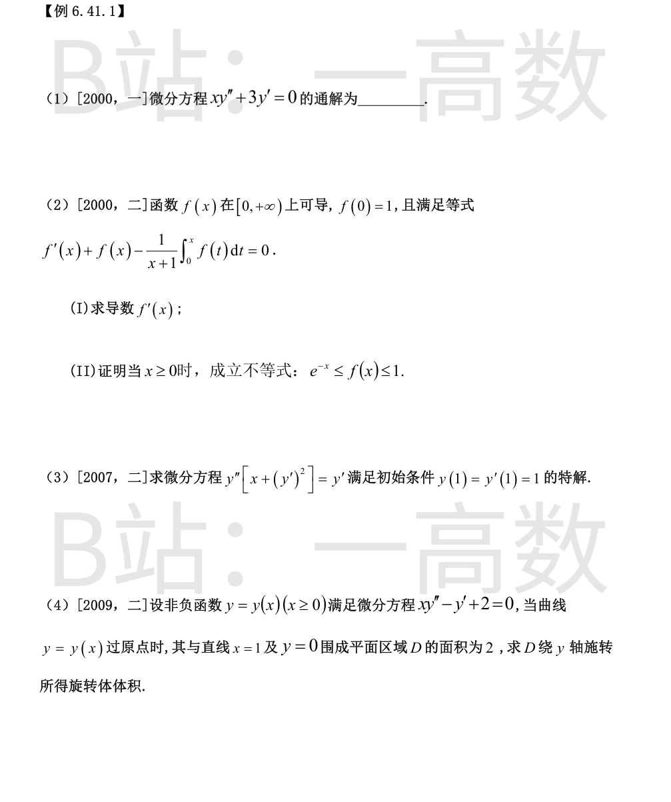
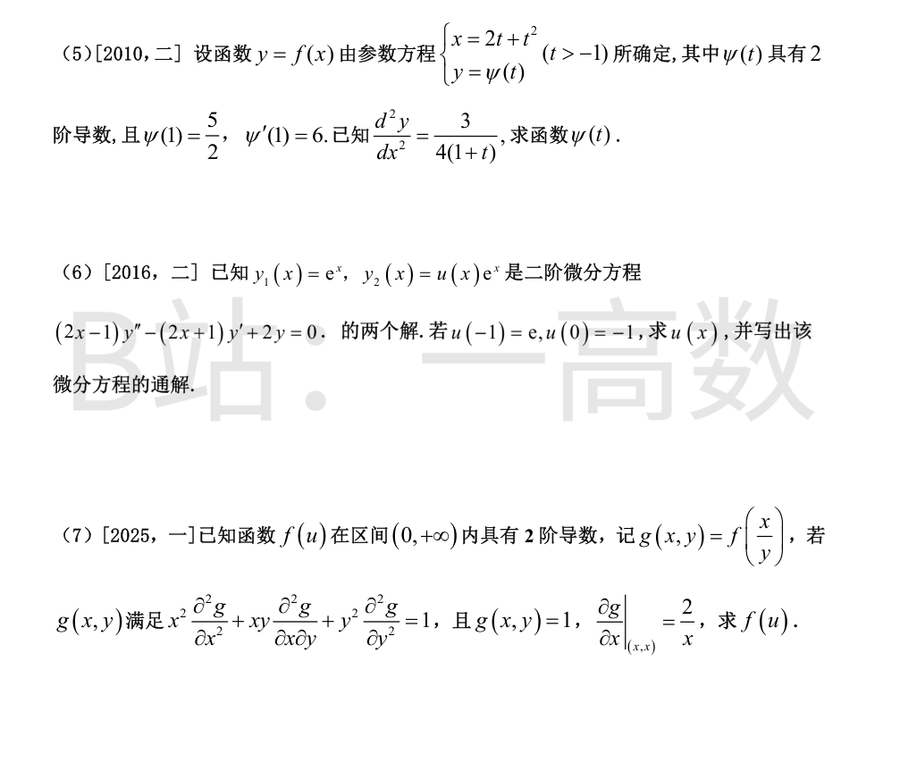
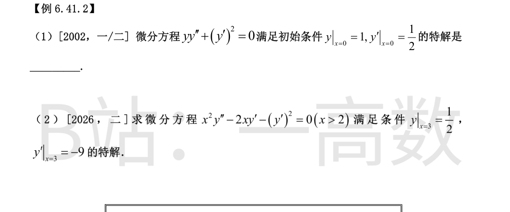
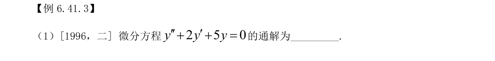
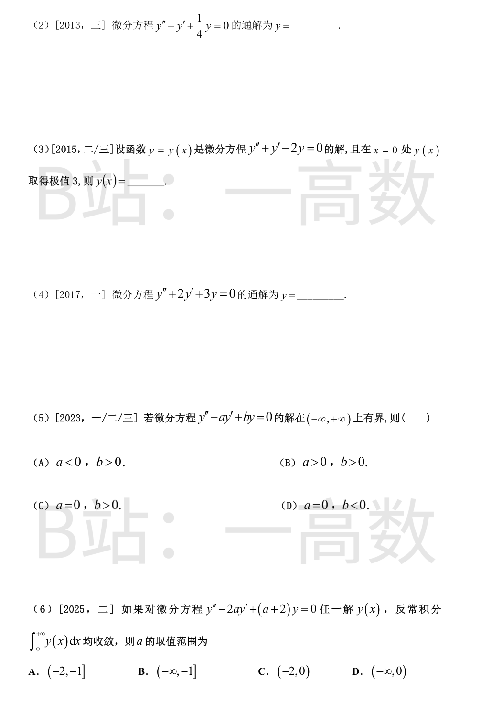
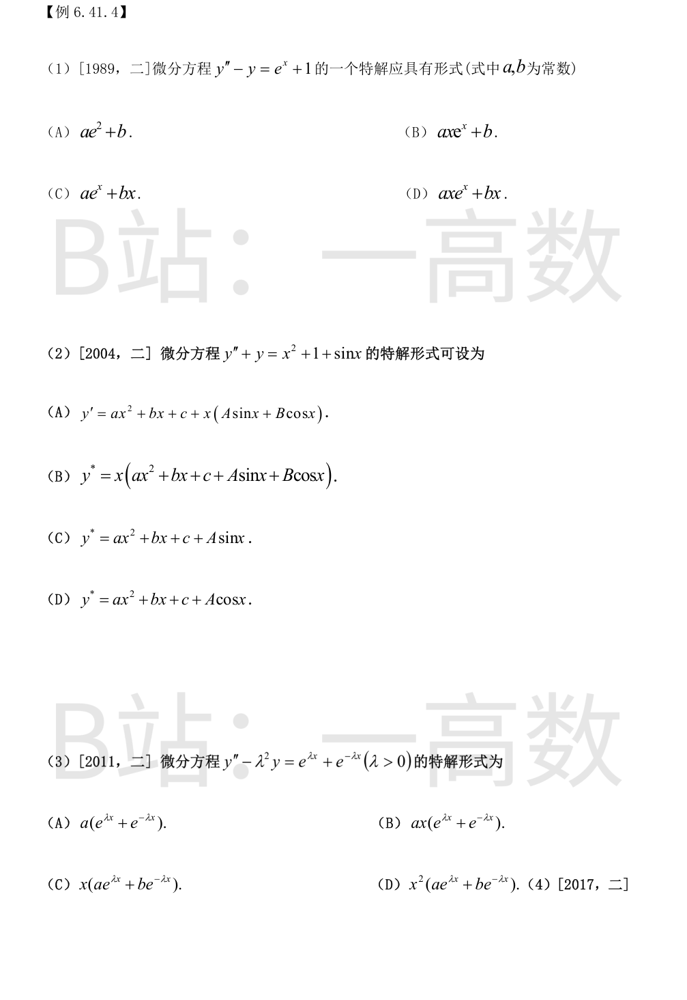
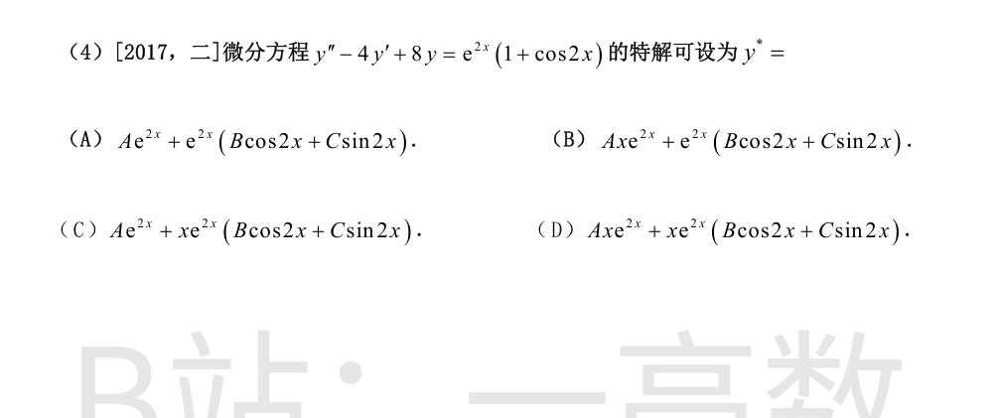
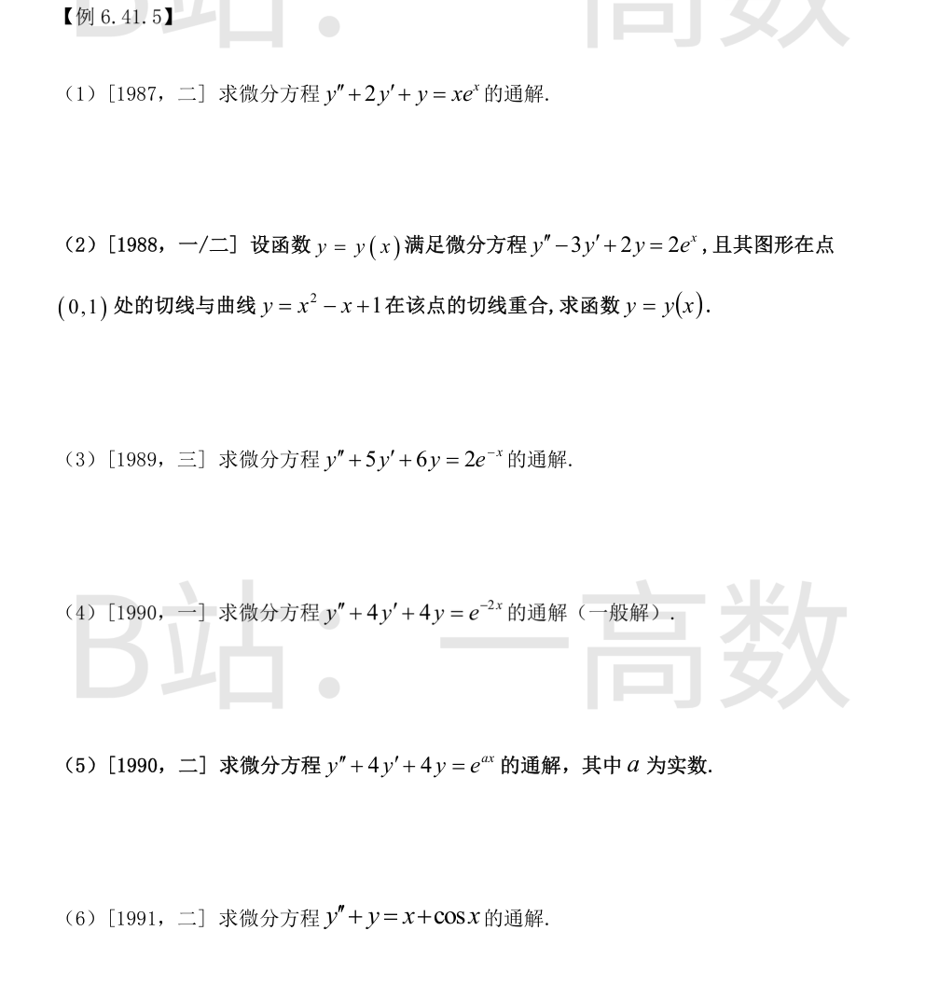
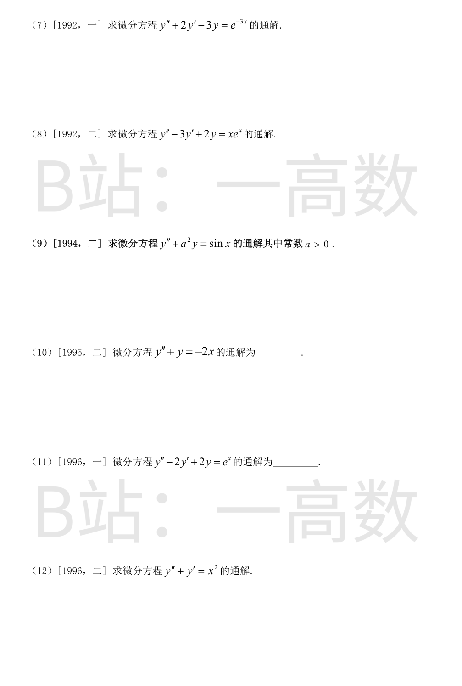
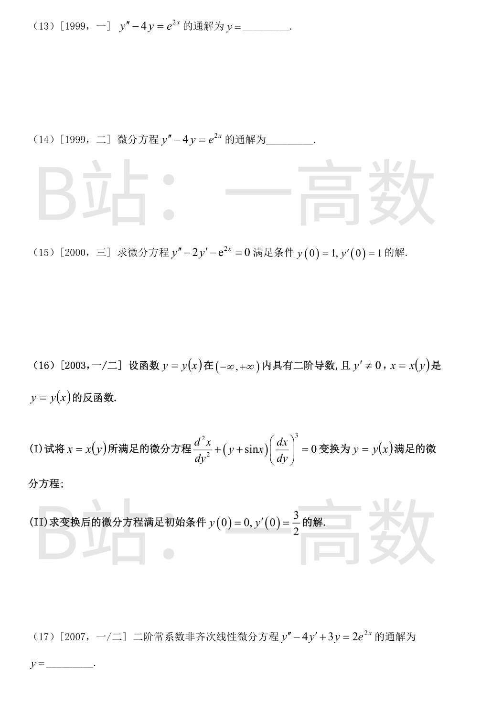

由 $(x^3y')'=x^3y''+3x^2y'=x^2(xy''+3y')$，方程（$x\ne0$）等价于 $(x^3y')'=0$。
$$x^3y'=C \Rightarrow y'=\frac{C}{x^3} \Rightarrow y=-\frac{C}{2x^2}+C_2$$
记 $C_1=-C/2$，得通解 $y=\dfrac{C_1}{x^2}+C_2$。
(I) 原式两边乘 $(x+1)$：
$$(x+1)f'(x)+(x+1)f(x)=\int_0^x f(t)\,dt$$
两边对 $x$ 求导：
$$f'+(x+1)f''+f+(x+1)f'-f=0\Rightarrow (x+1)f''+(x+2)f'=0$$
令 $p=f'$：(x+1)p'+(x+2)p=0，分离变量 $\dfrac{dp}{p}=-\left(1+\dfrac{1}{x+1}\right)dx$，积分得 $p=\dfrac{C_1e^{-x}}{x+1}$。
在原式中令 $x=0$：$f'(0)+f(0)=0$，而 $f(0)=1$，故 $f'(0)=-1\Rightarrow C_1=-1$，
$$f'(x)=-\frac{e^{-x}}{x+1}$$
(II) $f(x)=f(0)+\int_0^x f'(t)dt=1-\int_0^x\dfrac{e^{-t}}{t+1}dt$。当 $x\ge0$ 时 $0<\dfrac{e^{-t}}{t+1}\le e^{-t}$，故
$$0\le\int_0^x\frac{e^{-t}}{t+1}dt\le\int_0^xe^{-t}dt=1-e^{-x}$$
从而 $e^{-x}\le f(x)\le1$。
方程不含 $y$，令 $p=y'$，$y''=\dfrac{dp}{dx}$，方程化为 $(x+p^2)\dfrac{dp}{dx}=p$。视 $x$ 为 $p$ 的函数：
$$\frac{dx}{dp}-\frac{x}{p}=p$$
线性方程，乘积分因子 $\dfrac1p$：$\left(\dfrac{x}{p}\right)'=1\Rightarrow\dfrac{x}{p}=p+C_1\Rightarrow x=p^2+C_1p$。
由 $x=1$ 时 $p=y'=1$：$1=1+C_1\Rightarrow C_1=0$，故 $x=p^2$；又 $p(1)=1>0$，取 $p=\sqrt x$。
$$y'=\sqrt x\Rightarrow y=\frac23x^{3/2}+C_2,\quad y(1)=1\Rightarrow C_2=\frac13$$
故 $y=\dfrac23x^{3/2}+\dfrac13$。验证：$y'=\sqrt x$，$y''=\frac{1}{2\sqrt x}$，$y''[x+(y')^2]=\frac{1}{2\sqrt x}\cdot 2x=\sqrt x=y'$。
令 $p=y'$：$x\dfrac{dp}{dx}=p-2$，分离变量 $\dfrac{dp}{p-2}=\dfrac{dx}{x}$：
$$p-2=C_1x\Rightarrow y=\frac{C_1}{2}x^2+2x+C_2$$
曲线过原点：$y(0)=0\Rightarrow C_2=0$，$y=\dfrac{C_1}{2}x^2+2x\ (\ge0$ 于 $[0,1]$$)$。
面积条件：$\displaystyle\int_0^1\left(\frac{C_1}{2}x^2+2x\right)dx=\frac{C_1}{6}+1=2\Rightarrow C_1=6$，故 $y=3x^2+2x$。
绕 $y$ 轴旋转（柱壳法）：
$$V=2\pi\int_0^1x\,y(x)\,dx=2\pi\int_0^1(3x^3+2x^2)dx=2\pi\left(\frac34+\frac23\right)=\frac{17\pi}6$$
$x'=2+2t=2(1+t)$，
$$\frac{dy}{dx}=\frac{\psi'(t)}{2(1+t)},\qquad \frac{d^2y}{dx^2}=\frac{\dfrac{d}{dt}\left[\dfrac{\psi'}{2(1+t)}\right]}{2(1+t)}=\frac{(1+t)\psi''-\psi'}{4(1+t)^3}$$
由题设 $\dfrac{(1+t)\psi''-\psi'}{4(1+t)^3}=\dfrac{3}{4(1+t)}$，即
$$(1+t)\psi''-\psi'=3(1+t)^2$$
令 $q=\psi'$：$q'-\dfrac{q}{1+t}=3(1+t)$，积分因子 $\dfrac1{1+t}$：$\left(\dfrac{q}{1+t}\right)'=3\Rightarrow\dfrac{q}{1+t}=3t+C_1$。
由 $\psi'(1)=6$：$\dfrac62=3+C_1\Rightarrow C_1=0$，故 $q=3t(1+t)$，
$$\psi=t^3+\frac32t^2+C_2,\qquad \psi(1)=1+\frac32+C_2=\frac52\Rightarrow C_2=0$$
所以 $\psi(t)=t^3+\dfrac32t^2$。
$y_1=e^x$ 直接验证是解。把 $y_2=u(x)e^x$ 代入方程：
$$y_2'=(u'+u)e^x,\quad y_2''=(u''+2u'+u)e^x$$
$$(2x-1)(u''+2u'+u)-(2x+1)(u'+u)+2u=0$$
化简（$u$ 的系数相消）得
$$(2x-1)u''+(2x-3)u'=0$$
令 $p=u'$：$\dfrac{dp}{p}=-\dfrac{2x-3}{2x-1}dx=\left(-1+\dfrac{2}{2x-1}\right)dx$，得 $p=C(2x-1)e^{-x}$，
$$u=C\int(2x-1)e^{-x}dx=-C(2x+1)e^{-x}+C_2$$
由 $u(0)=-1$：$-C+C_2=-1$；由 $u(-1)=e$：$Ce+C_2=e$。解得 $C=-1,\ C_2=0$，故
$$u(x)=-(2x+1)e^{-x},\qquad y_2=-(2x+1)$$
$y_1=e^x$ 与 $y_2=-(2x+1)$ 线性无关，通解为
$$y=C_1e^x+C_2(2x+1)$$
记 $u=x/y$，则 $g_x=\dfrac{f'(u)}{y}$，
$$g_{xx}=\frac{f''}{y^2},\quad g_{xy}=-\frac{xf''}{y^3}-\frac{f'}{y^2},\quad g_{yy}=\frac{x^2f''}{y^4}+\frac{2xf'}{y^3}$$
$$x^2g_{xx}+xy\,g_{xy}+y^2g_{yy}=\frac{x^2f''}{y^2}+\frac{xf'}{y}=u^2f''+uf'=1$$
即 $(uf')'=\dfrac1u$，积分：$uf'=\ln u+C_1$，$f'=\dfrac{\ln u+C_1}{u}$，$f=\dfrac12\ln^2u+C_1\ln u+C_2$。
条件：$g(1,1)=1\Rightarrow f(1)=1$；又 $g_x|_{(x,x)}=\dfrac{f'(1)}{x}=\dfrac2x\Rightarrow f'(1)=2\Rightarrow C_1=2$；$f(1)=C_2=1$。
$$f(u)=\frac12\ln^2u+2\ln u+1\quad(u>0)$$
（注：图片中条件 $g(x,y)=1$ 按 $g(1,1)=1$ 理解，即 $f(1)=1$。）

注意到 $(yy')'=yy''+(y')^2=0\Rightarrow yy'=C_1$。由 $y(0)y'(0)=\dfrac12$ 得 $C_1=\dfrac12$，即 $y\dfrac{dy}{dx}=\dfrac12$：
$$\frac12y^2=\frac12x+C_2\Rightarrow y^2=x+C_2'$$
$y(0)=1\Rightarrow C_2'=1$，又 $y(0)=1>0$ 取正根：$y=\sqrt{x+1}$。
方程不含 $y$，令 $p=y'$：$x^2p'-2xp=p^2$，即 $p'-\dfrac2xp=\dfrac{p^2}{x^2}$（伯努利方程，$n=2$）。令 $v=\dfrac1p$：
$$v'+\frac2xv=-\frac1{x^2},\qquad (x^2v)'=-1\Rightarrow x^2v=-x+C\Rightarrow p=\frac{x^2}{C-x}$$
由 $y'(3)=-9$：$\dfrac9{C-3}=-9\Rightarrow C=2$，故 $y'=\dfrac{x^2}{2-x}=-x-2-\dfrac4{x-2}$。
$$y=-\frac{x^2}2-2x-4\ln(x-2)+C_2,\qquad y(3)=\frac12:\ -\frac92-6+C_2=\frac12\Rightarrow C_2=11$$
故 $y=11-2x-\dfrac{x^2}2-4\ln(x-2)\ (x>2)$。


特征方程 $r^2+2r+5=0$，$r=-1\pm2i$，故 $y=e^{-x}(C_1\cos2x+C_2\sin2x)$。
$r^2-r+\dfrac14=0$，$\left(r-\dfrac12\right)^2=0$，$r=\dfrac12$ 为二重根，$y=(C_1+C_2x)e^{x/2}$。
$r^2+r-2=0$，$r=1,-2$，$y=C_1e^x+C_2e^{-2x}$。极值条件：$y(0)=3,\ y'(0)=0$：
$$C_1+C_2=3,\quad C_1-2C_2=0\Rightarrow C_1=2,\ C_2=1$$
$y=2e^x+e^{-2x}$。
$r^2+2r+3=0$，$r=-1\pm\sqrt2\,i$，$y=e^{-x}(C_1\cos\sqrt2\,x+C_2\sin\sqrt2\,x)$。
任一解都有界 $\iff$ 特征根为互异纯虚根 $\pm i\omega$：
- $a\ne0$ 时根有非零实部（或实根），$e^{\alpha x}$ 型解总在一端无界；
- $a=0,\ b=0$：$y=C_1+C_2x$ 无界；$a=0,\ b<0$：正实根无界；重虚根给出 $x\sin\omega x$ 型无界解；
- $a=0,\ b>0$：$y=C_1\cos\sqrt b\,x+C_2\sin\sqrt b\,x$ 全体有界。
选 C。
特征方程 $r^2-2ar+(a+2)=0$，$r=a\pm\sqrt{a^2-a-2}$。基解组每个函数必须在 $[0,+\infty)$ 可积。
① 复根（$-1<a<2$）：解为 $e^{ax}(C_1\cos\omega x+C_2\sin\omega x)$ 型，$\int_0^{+\infty}$ 收敛 $\iff a<0$，得 $-1<a<0$；
② 重根：$a=-1$ 时 $r=-1$ 二重，$e^{-x},\ xe^{-x}$ 可积，纳入；$a=2$ 时 $r=2$，$\int e^{2x}dx$ 发散，排除；
③ 单实根（$a<-1$ 或 $a>2$）：需大根 $r_+=a+\sqrt{(a-2)(a+1)}<0\iff\sqrt{(a-2)(a+1)}<-a\iff a^2-a-2<a^2\iff a>-2$，得 $-2<a<-1$；$a=-2$ 时出现根 $r=0$，$\int 1\,dx$ 发散，排除；
④ $a\ge0$ 时（复根指数增长或实正根）均发散。
综上 $a\in(-2,0)$，选 C。


$r^2-1=0,\ r=\pm1$。右端 $e^x$：$\lambda=1$ 为单根 $\to$ 设 $axe^x$；右端 $1$：$\lambda=0$ 非根 $\to$ 设 $bx$。由叠加原理 $y^*=axe^x+bx$，选 D。
$r^2+1=0,\ r=\pm i$。$x^2+1$：$\lambda=0$ 非根 $\to ax^2+bx+c$；$\sin x$：$\lambda=i$ 为单根 $\to x(A\sin x+B\cos x)$。由叠加原理
$$y^*=ax^2+bx+c+x(A\sin x+B\cos x)$$
选 A（图中选项 A 的 $y'$ 为 $y^*$ 的排印误）。
$r^2-\lambda^2=0,\ r=\pm\lambda$。$e^{\lambda x}$ 与 $e^{-\lambda x}$ 对应的 $\pm\lambda$ 均为单根，各需乘 $x$：$y^*=x(ae^{\lambda x}+be^{-\lambda x})$，选 C。
$r^2-4r+8=0,\ r=2\pm2i$。$e^{2x}$：$\lambda=2$ 非根 $\to Ae^{2x}$；$e^{2x}\cos2x$：$\lambda=2+2i$ 为单根 $\to xe^{2x}(B\cos2x+C\sin2x)$。故
$$y^*=Ae^{2x}+xe^{2x}(B\cos2x+C\sin2x)$$
选 C。



$r^2+2r+1=0,\ r=-1$ 二重：$Y=(C_1+C_2x)e^{-x}$。$\lambda=1$ 非根，设 $y^*=e^x(ax+b)$。令 $y=e^xu$，左端为 $e^x(u''+4u'+4u)$，取 $u=ax+b$：
$$e^x[4ax+4(a+b)]=xe^x\Rightarrow a=\frac14,\ b=-\frac14$$
故 $y^*=\dfrac14(x-1)e^x$，通解 $y=(C_1+C_2x)e^{-x}+\dfrac14(x-1)e^x$。
$r^2-3r+2=0,\ r=1,2$。$\lambda=1$ 单根，$y^*=Axe^x$：代入左端得 $-Ae^x=2e^x\Rightarrow A=-2$，$y=C_1e^x+C_2e^{2x}-2xe^x$。
切线条件：$y=x^2-x+1$ 在 $x=0$ 处 $y=1,\ y'=-1$，故 $y(0)=1,\ y'(0)=-1$：
$$C_1+C_2=1,\quad C_1+2C_2-2=-1\Rightarrow C_2=0,\ C_1=1$$
所以 $y=(1-2x)e^x$。
$r^2+5r+6=0,\ r=-2,-3$；$\lambda=-1$ 非根，$y^*=Ae^{-x}$：$A(1-5+6)=2A=2\Rightarrow A=1$。
$$y=C_1e^{-2x}+C_2e^{-3x}+e^{-x}$$
$r^2+4r+4=0,\ r=-2$ 二重；$\lambda=-2$ 为重根，$y^*=Ax^2e^{-2x}$。令 $y=e^{-2x}u$，左端 $=e^{-2x}u''$；$u=Ax^2$，$u''=2A$，故 $2Ae^{-2x}=e^{-2x}\Rightarrow A=\dfrac12$。
$$y=(C_1+C_2x)e^{-2x}+\frac{x^2}{2}e^{-2x}$$
$r=-2$ 二重。
- $a\ne-2$：设 $y^*=Ae^{ax}$，代入左端得 $(a^2+4a+4)Ae^{ax}=(a+2)^2Ae^{ax}=e^{ax}\Rightarrow A=\dfrac1{(a+2)^2}$，$y=(C_1+C_2x)e^{-2x}+\dfrac{e^{ax}}{(a+2)^2}$；
- $a=-2$：即重根情形，$y=(C_1+C_2x)e^{-2x}+\dfrac{x^2}{2}e^{-2x}$。
$r=\pm i$。对 $x$：设 $y_1^*=ax+b$，$y_1^{*\prime\prime}+y_1^*=ax+b=x\Rightarrow a=1,b=0$，$y_1^*=x$。
对 $\cos x$：$\lambda=i$ 为单根，$y_2^*=x(A\cos x+B\sin x)$，代入左端得 $2(-A\sin x+B\cos x)=\cos x\Rightarrow A=0,\ B=\dfrac12$，$y_2^*=\dfrac x2\sin x$。
$$y=C_1\cos x+C_2\sin x+x+\frac x2\sin x$$
$r^2+2r-3=0,\ r=1,-3$；$\lambda=-3$ 单根，$y^*=Axe^{-3x}$：$y^{*\prime\prime}+2y^{*\prime}-3y^*=-4Ae^{-3x}=e^{-3x}\Rightarrow A=-\dfrac14$。
$$y=C_1e^x+C_2e^{-3x}-\frac x4e^{-3x}$$
$r=1,2$。令 $y=e^xu$：左端 $=e^x(u''-u')=xe^x\Rightarrow u''-u'=x$。令 $w=u'$：$w'-w=x$，特解 $w=-x-1$（验证：$-1-(-x-1)=x$），$u=-\dfrac{x^2}2-x$。
$$y=C_1e^x+C_2e^{2x}-\left(\frac{x^2}2+x\right)e^x$$
$r=\pm ai$。
- $a\ne1$：设 $y^*=A\sin x$，$A(a^2-1)\sin x=\sin x\Rightarrow A=\dfrac1{a^2-1}$，$y=C_1\cos ax+C_2\sin ax+\dfrac{\sin x}{a^2-1}$；
- $a=1$：$\lambda=i$ 单根，$y^*=x(A\cos x+B\sin x)$，左端 $=2(-A\sin x+B\cos x)=\sin x\Rightarrow A=-\dfrac12,\ B=0$，$y=C_1\cos x+C_2\sin x-\dfrac x2\cos x$。
$r=\pm i$；设 $y^*=ax+b$，$y^{*\prime\prime}+y^*=ax+b=-2x\Rightarrow a=-2,b=0$，$y^*=-2x$。
$$y=C_1\cos x+C_2\sin x-2x$$
$r^2-2r+2=0,\ r=1\pm i$：$Y=e^x(C_1\cos x+C_2\sin x)$。$\lambda=1$ 非根，$y^*=Ae^x$：$A(1-2+2)=A=1\Rightarrow A=1$。
$$y=e^x(C_1\cos x+C_2\sin x)+e^x$$
$r^2+r=0,\ r=0,-1$。$\lambda=0$ 单根，设 $y^*=x(ax^2+bx+c)$：$y^{*\prime}=3ax^2+2bx+c$，$y^{*\prime\prime}=6ax+2b$，
$$y^{*\prime\prime}+y^{*\prime}=3ax^2+(6a+2b)x+(2b+c)=x^2\Rightarrow a=\frac13,\ b=-1,\ c=2$$
$$y=C_1+C_2e^{-x}+\frac{x^3}3-x^2+2x$$
$r=\pm2$；$\lambda=2$ 单根，$y^*=Axe^{2x}$：$y^{*\prime\prime}-4y^*=4Ae^{2x}=e^{2x}\Rightarrow A=\dfrac14$。
$$y=C_1e^{2x}+C_2e^{-2x}+\frac x4e^{2x}$$
与数一同题：$r=\pm2$；$\lambda=2$ 单根，$y^*=Axe^{2x}$，代入得 $4A=1\Rightarrow A=\dfrac14$。
$$y=C_1e^{2x}+C_2e^{-2x}+\frac x4e^{2x}$$
方程即 $y''-2y'=e^{2x}$，$r=0,2$；$\lambda=2$ 单根，$y^*=Axe^{2x}$：$y^{*\prime\prime}-2y^{*\prime}=2Ae^{2x}=e^{2x}\Rightarrow A=\dfrac12$。
$$y=C_1+C_2e^{2x}+\frac x2e^{2x},\qquad y(0)=1:\ C_1+C_2=1$$
$y'=2C_2e^{2x}+\dfrac12e^{2x}+xe^{2x}$，$y'(0)=1:\ 2C_2+\dfrac12=1\Rightarrow C_2=\dfrac14,\ C_1=\dfrac34$。
$$y=\frac34+\left(\frac14+\frac x2\right)e^{2x}$$
由反函数求导法则（$y'\ne0$）：
$$\frac{dy}{dx}=\frac{1}{dx/dy},\qquad \frac{d^2x}{dy^2}=\frac{d}{dx}\left(\frac1{y'}\right)\cdot\frac{dx}{dy}=-\frac{y''}{(y')^3}$$
代入原方程：$-\dfrac{y''}{(y')^3}+(y+\sin x)\dfrac1{(y')^3}=0$，乘 $(y')^3$：
$$(I)\qquad y''-y=\sin x$$
$r=\pm1$；设 $y^*=A\sin x+B\cos x$：$y^{*\prime\prime}-y^*=-2(A\sin x+B\cos x)=\sin x\Rightarrow A=-\dfrac12,\ B=0$。
$y=C_1e^x+C_2e^{-x}-\dfrac12\sin x$；$y(0)=0:\ C_1+C_2=0$；$y'(0)=\dfrac32:\ C_1-C_2-\dfrac12=\dfrac32\Rightarrow C_1=1,\ C_2=-1$。
$$(II)\qquad y=e^x-e^{-x}-\frac12\sin x$$
$r^2-4r+3=0,\ r=1,3$；$\lambda=2$ 非根，$y^*=Ae^{2x}$：$A(4-8+3)=-A=2\Rightarrow A=-2$。
$$y=C_1e^x+C_2e^{3x}-2e^{2x}$$